5 – Training versus Testing
上节课，我们主要介绍了机器学习的可行性。首先，由NFL定理可知，机器学习貌似是不可行的。但是，随后引入了统计学知识，如果样本数据足够大，且hypothesis个数有限，那么机器学习一般就是可行的。本节课将讨论机器学习的核心问题，严格证明为什么机器可以学习。从上节课最后的问题出发，即当hypothesis的个数是无限多的时候，机器学习的可行性是否仍然成立？
一、Recap and Preview
我们先来看一下基于统计学的机器学习流程图：
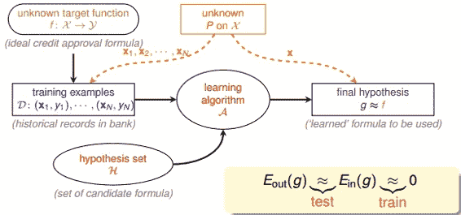
该流程图中，训练样本D和最终测试h的样本都是来自同一个数据分布，这是机器能够学习的前提。另外，训练样本D应该足够大，且hypothesis set的个数是有限的，这样根据霍夫丁不等式，才不会出现Bad Data，保证，即有很好的泛化能力。同时，通过训练，得到使 最小的h，作为模型最终的矩g，g接近于目标函数。
最小的h，作为模型最终的矩g，g接近于目标函数。
这里，我们总结一下前四节课的主要内容：第一节课，我们介绍了机器学习的定义，目标是找出最好的矩g，使，保证；第二节课，我们介绍了如何让，可以使用PLA、pocket等演算法来实现；第三节课，我们介绍了机器学习的分类，我们的训练样本是批量数据（batch），处理监督式（supervised）二元分类（binary classification）问题；第四节课，我们介绍了机器学习的可行性，通过统计学知识，把与联系起来，证明了在一些条件假设下，成立。
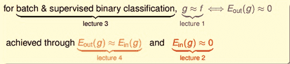
这四节课总结下来，我们把机器学习的主要目标分成两个核心的问题：

 足够小
足够小
上节课介绍的机器学习可行的一个条件是hypothesis set的个数M是有限的，那M跟上面这两个核心问题有什么联系呢？
我们先来看一下，当M很小的时候，由上节课介绍的霍夫丁不等式，得到，即能保证第一个核心问题成立。但M很小时，演算法A可以选择的hypothesis有限，不一定能找到使足够小的hypothesis，即不能保证第二个核心问题成立。当M很大的时候，同样由霍夫丁不等式，与的差距可能比较大，第一个核心问题可能不成立。而M很大，使的演算法A的可以选择的hypothesis就很多，很有可能找到一个hypothesis，使足够小，第二个核心问题可能成立。
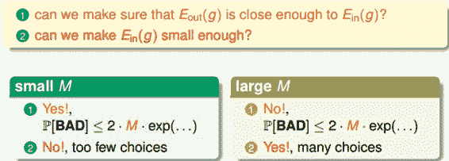
从上面的分析来看，M的选择直接影响机器学习两个核心问题是否满足，M不能太大也不能太小。那么如果M无限大的时候，是否机器就不可以学习了呢？例如PLA算法中直线是无数条的，但是PLA能够很好地进行机器学习，这又是为什么呢？如果我们能将无限大的M限定在一个有限的内，问题似乎就解决了。
二、Effective Number of Line
我们先看一下上节课推导的霍夫丁不等式：
其中，M表示hypothesis的个数。每个hypothesis下的BAD events 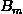级联的形式满足下列不等式：
当时，上面不等式右边值将会很大，似乎说明BAD events很大，与也并不接近。但是BAD events 级联的形式实际上是扩大了上界，union bound过大。这种做法假设各个hypothesis之间没有交集，这是最坏的情况，可是实际上往往不是如此，很多情况下，都是有交集的，也就是说M实际上没那么大，如下图所示：
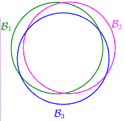
也就是说union bound被估计过高了（over-estimating）。所以，我们的目的是找出不同BAD events之间的重叠部分，也就是将无数个hypothesis分成有限个类别。
如何将无数个hypothesis分成有限类呢？我们先来看这样一个例子，假如平面上用直线将点分开，也就跟PLA一样。如果平面上只有一个点x1，那么直线的种类有两种：一种将x1划为+1，一种将x1划为-1：
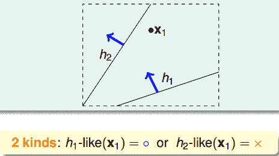
如果平面上有两个点x1、x2，那么直线的种类共4种：x1、x2都为+1，x1、x2都为-1，x1为+1且x2为-1，x1为-1且x2为+1：
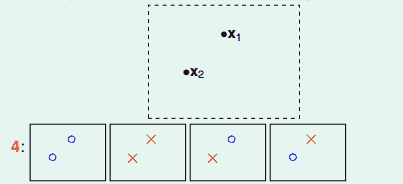
如果平面上有三个点x1、x2、x3，那么直线的种类共8种：
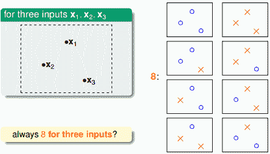
但是，在三个点的情况下，也会出现不能用一条直线划分的情况：
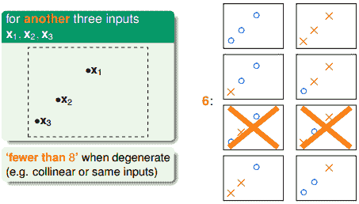
也就是说，对于平面上三个点，不能保证所有的8个类别都能被一条直线划分。那如果是四个点x1、x2、x3、x4，我们发现，平面上找不到一条直线能将四个点组成的16个类别完全分开，最多只能分开其中的14类，即直线最多只有14种：
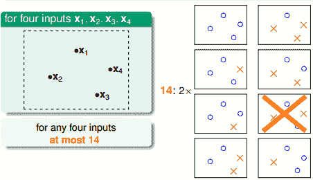
经过分析，我们得到平面上线的种类是有限的，1个点最多有2种线，2个点最多有4种线，3个点最多有8种线，4个点最多有14（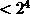）种线等等。我们发现，有效直线的数量总是满足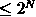，其中，N是点的个数。所以，如果我们可以用effective(N)代替M，霍夫丁不等式可以写成：
已知effective(N)<，如果能够保证effective(N)<<，即不等式右边接近于零，那么即使M无限大，直线的种类也很有限，机器学习也是可能的。
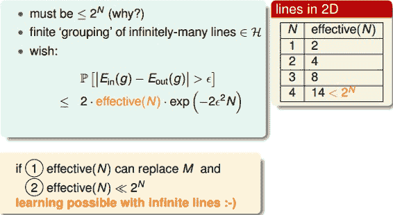
三、Effective Number of Hypotheses
接下来先介绍一个新名词：二分类（dichotomy）。dichotomy就是将空间中的点（例如二维平面）用一条直线分成正类（蓝色o）和负类（红色x）。令H是将平面上的点用直线分开的所有hypothesis h的集合，dichotomy H与hypotheses H的关系是：hypotheses H是平面上所有直线的集合，个数可能是无限个，而dichotomy H是平面上能将点完全用直线分开的直线种类，它的上界是。接下来，我们要做的就是尝试用dichotomy代替M。
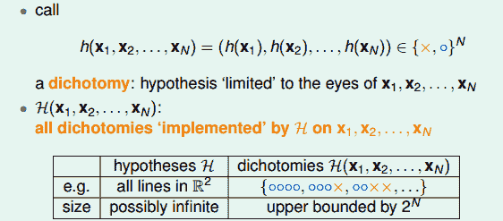
再介绍一个新的名词：成长函数（growth function），记为。成长函数的定义是：对于由N个点组成的不同集合中，某集合对应的dichotomy最大，那么这个dichotomy值就是，它的上界是：
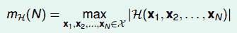
成长函数其实就是我们之前讲的effective lines的数量最大值。根据成长函数的定义，二维平面上，随N的变化关系是：
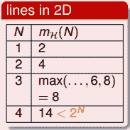
接下来，我们讨论如何计算成长函数。先看一个简单情况，一维的Positive Rays：
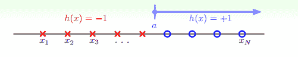
若有N个点，则整个区域可分为N+1段，很容易得到其成长函数。注意当N很大时，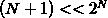，这是我们希望看到的。
另一种情况是一维的Positive Intervals：
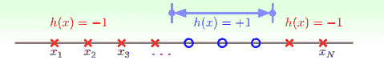
它的成长函数可以由下面推导得出：
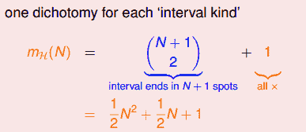
这种情况下，，在N很大的时候，仍然是满足的。
再来看这个例子，假设在二维空间里，如果hypothesis是凸多边形或类圆构成的封闭曲线，如下图所示，左边是convex的，右边不是convex的。那么，它的成长函数是多少呢？
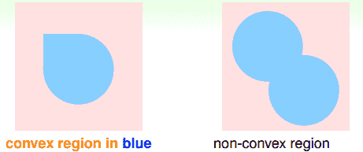
当数据集D按照如下的凸分布时，我们很容易计算得到它的成长函数。这种情况下，N个点所有可能的分类情况都能够被hypotheses set覆盖，我们把这种情形称为shattered。也就是说，如果能够找到一个数据分布集，hypotheses set对N个输入所有的分类情况都做得到，那么它的成长函数就是。
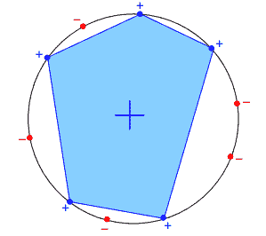
四、Break Point
上一小节，我们介绍了四种不同的成长函数，分别是：
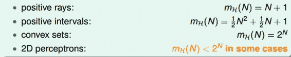
其中，positive rays和positive intervals的成长函数都是polynomial的，如果用代替M的话，这两种情况是比较好的。而convex sets的成长函数是exponential的，即等于M，并不能保证机器学习的可行性。那么，对于2D perceptrons，它的成长函数究竟是polynomial的还是exponential的呢？
对于2D perceptrons，我们之前分析了3个点，可以做出8种所有的dichotomy，而4个点，就无法做出所有16个点的dichotomy了。所以，我们就把4称为2D perceptrons的break point（5、6、7等都是break point）。令有k个点，如果k大于等于break point时，它的成长函数一定小于2的k次方。
根据break point的定义，我们知道满足的k的最小值就是break point。对于我们之前介绍的四种成长函数，他们的break point分别是：
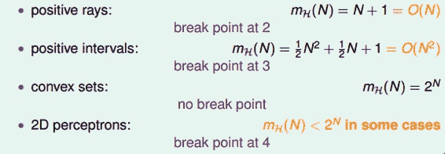
通过观察，我们猜测成长函数可能与break point存在某种关系：对于convex sets，没有break point，它的成长函数是2的N次方；对于positive rays，break point k=2，它的成长函数是O(N)；对于positive intervals，break point k=3，它的成长函数是。则根据这种推论，我们猜测2D perceptrons，它的成长函数 。如果成立，那么就可以用代替M，就满足了机器能够学习的条件。关于上述猜测的证明，我们下节课再详细介绍。
五、总结
本节课，我们更深入地探讨了机器学习的可行性。我们把机器学习拆分为两个核心问题：和。对于第一个问题，我们探讨了M个hypothesis到底可以划分为多少种，也就是成长函数。并引入了break point的概念，给出了break point的计算方法。下节课，我们将详细论证对于2D perceptrons，它的成长函数与break point是否存在多项式的关系，如果是这样，那么机器学习就是可行的。
注明：
文章中所有的图片均来自台湾大学林轩田《机器学习基石》课程。